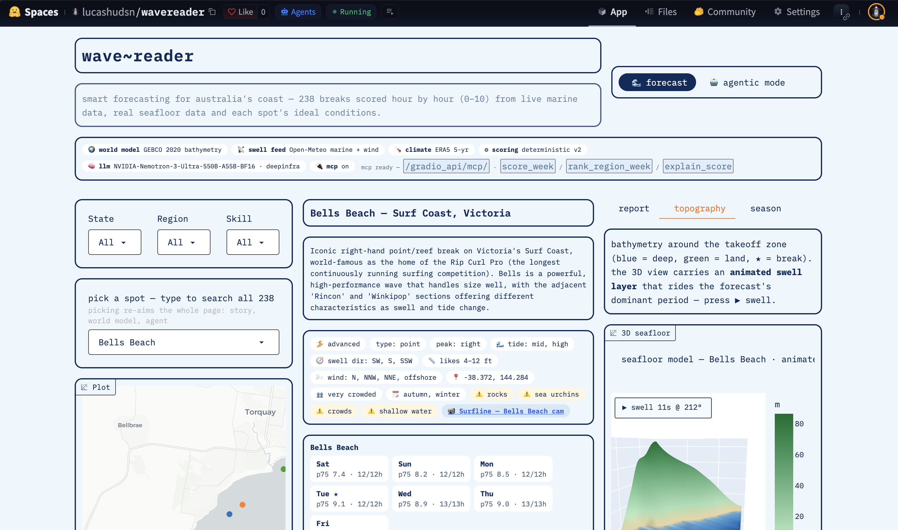

🏆 NVIDIA GTC Berlin — Golden Ticket Winner
wave~reader won a Golden Ticket to GTC Berlin in the
NVIDIA GTC golden ticket challenge — built on open weights
(nvidia/NVIDIA-Nemotron-3-Ultra-550B-A55B-BF16) via Hugging
Face Inference Providers.
I built an agentic surf forecaster — wave~reader — and it won a Golden Ticket to GTC Berlin.

Live: https://huggingface.co/spaces/lucashudsn/wavereader Code: https://github.com/lucas-hudsn/wavereader
What is wave~reader?
A surf-forecasting world model for the Australian coast: 238 breaks, 168 deterministic scores per spot, a 3D seafloor built from real GEBCO bathymetry — and one open model that narrates the numbers instead of inventing them.
Ask it “where’s good in NSW this weekend?” and it reasons, calls tools, cites them, and narrates — it never makes up its own swell.
One rule holds the whole app together
The LLM never owns numbers. Every wave height, wind
reading, and 0–10 score comes out of plain deterministic Python —
wavereader/scoring.py,
wavereader/openmeteo.py, wavereader/tools.py —
running over live Open-Meteo marine feeds + 5 years of ERA5
reanalysis.
The model’s contract is to interpret those numbers, name the tool that produced them, and never compute a forecast itself. The agent can recommend; it can’t hallucinate a swell.
One screen, four instruments
No tabs. One surface, four synchronized instruments, one source of
truth (selected):
- Map lens (left) — all 238 breaks on a Plotly map, filtered by state / region / skill.
- Forecast story (center) — 0–10 score for every hour of the next 7 days, score / swell / wind strips with weekend shading, then a smoothed 3D seafloor with animated swell riding the forecast’s dominant period.
- Intel rail (right) — field guide (peak type, ideal swell / wind / tide, hazards, crowd), 5-year ERA5 swell climate rose, wetsuit hint, nearby surf cams.
- Agent bar (full width) — chat powered by smolagents
ToolCallingAgenton Nemotron 3 Ultra. Every tool card shows latency in ms. Hard budget: 6 steps, 700 tokens a turn.
The stack: NVIDIA open weights on Hugging Face rails
Every model call goes through one door — Hugging Face
Inference Providers, served by DeepInfra — running
nvidia/NVIDIA-Nemotron-3-Ultra-550B-A55B-BF16. No private
APIs, one HF_TOKEN.
Around it, everything is open too: Open-Meteo forecasts, ERA5 reanalysis, GEBCO 2020 bathymetry via OpenTopoData, and a scoring engine you can read in one sitting.
The app is the tool: MCP built in
app.py launches with mcp_server=True, so
any MCP client can drive the deterministic engines directly at
<space-or-local-url>/gradio_api/mcp/. Same three
typed tools the agent uses:
score_week— hourly 0–10 scores, daily bests, best windowrank_region_week— every break in a region, ranked best-firstexplain_score— size / direction / wind / period breakdown of one hour
Everything else is registered with api_name=False on
purpose — the MCP surface stays clean.
Try it
- Live app: https://huggingface.co/spaces/lucashudsn/wavereader
- Contest entry: LinkedIn post
- Winners: LinkedIn post
See you at GTC Berlin!